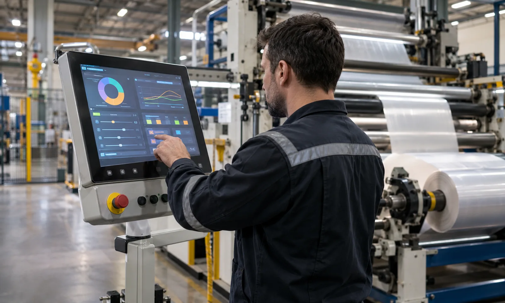

Published September 14, 2026 | By HDPTH Technical Editorial Team

On many converting lines, the machine's real product knowledge lives in three places: the HMI, a binder of printed setup sheets, and the memory of the longest-serving operator. That arrangement works until the operator is on holiday, a second shift takes over, or a customer asks for the process data behind a specific batch. Recipe management replaces that informal arrangement with named, versioned setting sets, and line data logging replaces memory with records.
This guide explains what a slitter rewinder recipe should contain, which production data is worth logging, how the machine connects to factory systems, and what to verify at FAT. It complements the automatic knife positioning buyer guide, because automated knife setup only delivers its full value when the target positions are recalled from a recipe instead of being typed in by hand.
What a slitter rewinder recipe should contain
A recipe is more than a speed setting. For each product, the recipe should store and recall as one unit:
- Slit pattern: number of lanes, slit widths, and knife positions, including automatic knife targets where the machine supports them.
- Tension profile: unwind tension, taper tension curve, rewind tension profile, and any diameter-dependent compensation.
- Speed and ramp limits for the product, including any customer-specific acceleration behavior.
- Length and count targets, core and roll definitions, and roll label or counter behavior.
- Auxiliary settings: static bars, perforation timing, web cleaners, dust extraction levels, and any glue or splice parameters the product uses.
Two properties matter as much as the content. First, completeness: if an operator still has to remember two settings that are not in the recipe, the recipe system has a hole that will eventually produce a bad roll. Second, versioning: when a recipe is edited, the machine should keep the old version identifiable, because traceability investigations often ask what settings were active on a specific date.
Manual setup versus recipe-driven setup
| Aspect | Manual setup | Recipe-driven setup |
|---|---|---|
| Changeover time | Depends on operator experience and note quality | One selection configures the machine; operator confirms the change list |
| Transcription errors | Slit widths and tensions retyped by hand at every changeover | Eliminated for stored values; edits are deliberate and logged |
| Repeatability | Same product can run differently on different shifts | Same recipe version produces the same machine configuration |
| Traceability | Settings reconstructed from memory or paper | Recipe version stored with the batch record |
| Improvement loop | Informal; good settings travel by word of mouth | Best-known settings become the recipe; changes are deliberate |
The pattern is the same one that justifies automatic tension control in the load cell versus dancer guide: converting quality improves when the machine holds the intended value instead of whatever the operator had time to set.
Which line data to log, and why
Data logging serves three buyers at once: quality needs traceability, production needs OEE, and maintenance needs condition history. A practical logging scope covers:
- Order and batch identity: which recipe version ran, for which order, producing which rolls.
- Production totals: produced length, roll count, yield, and waste events with roll-level identification.
- Downtime and reasons: start and end of stops with operator-selectable reason codes, so OEE is calculated from real categories instead of guesses.
- Alarm history: timestamped alarms with acknowledgement, which is also the raw material for the web break analysis and other recurring problems.
- Key process values: actual tension and speed trends, at a sampling rate that captures what the quality team needs without flooding storage.
The export question belongs in the RFQ. A machine that can only show this data on its own screen creates a transcription job; a machine that exports a structured file (CSV or an equivalent format) with a documented layout turns the same data into something a factory system can consume.
Connecting the machine to factory systems
Integration is a spectrum, and buyers should choose the level deliberately. The simplest level is standalone logging with manual export, which suits factories without a production system. The middle level is a supervised line network where several machines report to one shop-floor view. The deepest level is bidirectional integration with a MES or ERP layer: orders download to the machine, results upload automatically.
For the deeper levels, ask which interface the control system uses and how it is documented. Open protocols such as OPC UA are a defensible default because they are vendor-neutral and widely supported by industrial systems, and security requirements for the remote access path should follow recognized industrial network security practice. The scope of integration is a project decision with real engineering effort attached, so it belongs in the first RFQ, not as an addition after delivery.
Need recipe scope and data integration defined for your line?
Send your product list, changeover frequency, and traceability requirements through the inquiry page. HDPTH will propose the recipe structure and the data interface for your project before quotation.
Start Your RFQWhat FAT should prove about recipes and data
Recipe and data functions fail quietly, so FAT must exercise them, not just show that the screens exist. Ask the supplier to demonstrate, with the buyer's real products:
First, create and edit at least two recipes, then call each one and verify that the machine physically configures itself: knife positions match the pattern, tension setpoints appear, and limits change with the product. Second, back up all recipes to external media, wipe or alter them, restore, and run again. Third, make an edit and confirm the version and user identity are logged. Fourth, produce a short run and export the batch record, then open the export on the buyer's own laptop and check that every field the traceability system needs is present and readable. Finally, demonstrate a downtime event with a reason code and show where it appears in the OEE data.
Buyers building a full acceptance plan should fold these checks into the FAT checklist so they cannot be skipped when the schedule is tight, and can review how the control architecture fits the wider line in the commissioning checklist.
What to put in the RFQ
A complete RFQ section for this scope contains: the number of products and recipes expected at commissioning; the full list of settings that must live inside a recipe; the data fields to be logged and the export format; the integration level expected (standalone, supervised, or MES-connected) with the interface standard; user management and access level requirements; and backup, restore, and version history expectations. If customer audits or destination-market traceability rules apply, name them, because they raise the bar on the batch record content.
Suppliers who build project-specific control systems will respond with a concrete proposal. Vague answers here are a reliable signal that changeover knowledge will stay informal after delivery.
Buyer FAQs
What is a recipe on a slitter rewinder?
A recipe is a stored, named set of machine settings for one product: slit pattern and knife positions, unwind and rewind tension profiles, taper tension curves, speed limits, length targets, counters, and any auxiliary settings such as static bars or perforation timing. Calling a recipe should configure all of these together, consistently.
Which line data should a slitter rewinder record?
At minimum: order and batch identity, recipe version, produced length and roll count, downtime events with reasons, alarm history, and the key process values such as actual tension and speed. Buyers with traceability requirements should also link finished rolls to the order and batch records.
How does recipe management reduce changeover errors?
It removes manual re-entry of settings that change between products. Instead of an operator typing slit widths and tension values by hand, the operator selects the product and the machine configures itself, with changes shown for confirmation. This shortens changeovers and prevents transcription mistakes.
Can a slitter rewinder connect to a factory MES or ERP system?
Yes, if the control system supports a standard interface such as OPC UA or a documented field for order download and result upload. Buyers should define the scope in the RFQ, because the difference between viewing data on the HMI and exchanging structured orders with a factory system is a project decision, not a default feature.
What should buyers verify about recipes at FAT?
Create, edit, back up, restore and call at least two real recipes; confirm that the machine physically configures itself as the recipe describes; confirm that edits are logged with user identity; and demonstrate the export format of the production data so it can be checked against the buyer's traceability requirements.
Sources
- OPC Foundation: OPC Unified Architecture specification
- IEC 62443: Industrial communication networks security
- ISO 22400: Automation systems in manufacturing — Key performance indicators for manufacturing operations management
Put recipes and line data into the machine scope
Send your product structure and data requirements to HDPTH through the inquiry form. For related control topics, review the automatic tension control guide and the rewind torque control guide.
Contact HDPTH for Project Review